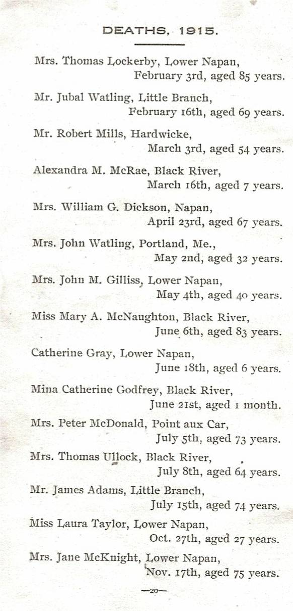

The Family Chronicle
No. 137 April 20, 2006
____________________________________________________________________
Hampton, Virginia
Recently Carol and I spent a week in Virginia and, while there, visited Hampton where my father and mother lived in 1918. (Their daughter, Margaret is buried in St. John’s Episcopal Cemetery).
In 1915, the US set up a National Advisory Committee for Aeronautics and on December 5, 1916 the Secretary of War approved the purchase of 1,660 acres near Hampton, Virginia. The property was mostly wooded, with some open fields and much marshland, and had direct access to the water for seaplane landings. It is obvious from reading local histories, that there was a major push to prepare the field for immediate use.
The contract for clearing and construction was awarded to J. G. White Engineering Corporation of New York City; actual work did not get under way until mid-1917. Carpenters were paid $7.00 per day. At the same time, work was progressing on the dredging of the Back River, building of rail and road links to the city, and the construction of the landing field. Eventually the entire project was taken over by the US Army with supervision provided by the civilian contractor.
The initial detachment of military personnel arrived in April, 1917 and was housed in some of the buildings on the property at time of purchase. The entry of the US into WW! added new urgency to the project.
By 1918, my father had been involved in heavy construction throughout the US and, not surprisingly, became a civilian supervisor (I do not know at what level) at Langley field; he and the family (Grace, Walter, Venetia and Lillian) lived on the base. Among Dad’s mementoes were his “identification badge” with White Engineering and a letter from the US Department of Defense thanking him for services rendered. Sisters Venetia and Lillian kept their passes admitting them to Langley Field.
St. Stephen’s Church Records
Records from St. Stephen’s church for the years 1910, 1913, 1915 and 1922 were given to me by Agnes (Gibson) Glendenning. The vital statistics, births, deaths, and marriages may be of interest to those searching their family roots and some appear in this issue; others will be included in future issues.

The Family Chronicle (Copyright) is an occasional newsletter published by Don Glendenning and posted on the family website. It is intended to share information about my family, community and the times in which I grew up. While every effort is made to be accurate, errors are likely to occur. Comments, enquiries and information may be sent to 62 Queen Elizabeth Drive, Charlottetown, PEI, C1A 3A9. Tel: 902 892 5859. Email: don@glendenning.net Web: www.glendenning.net/don